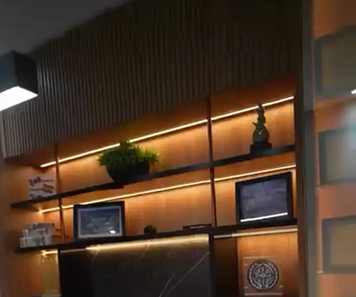
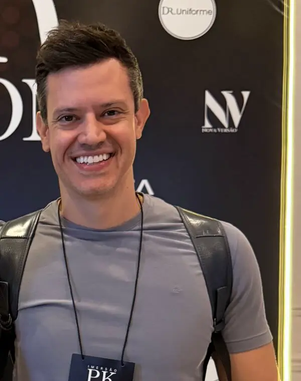
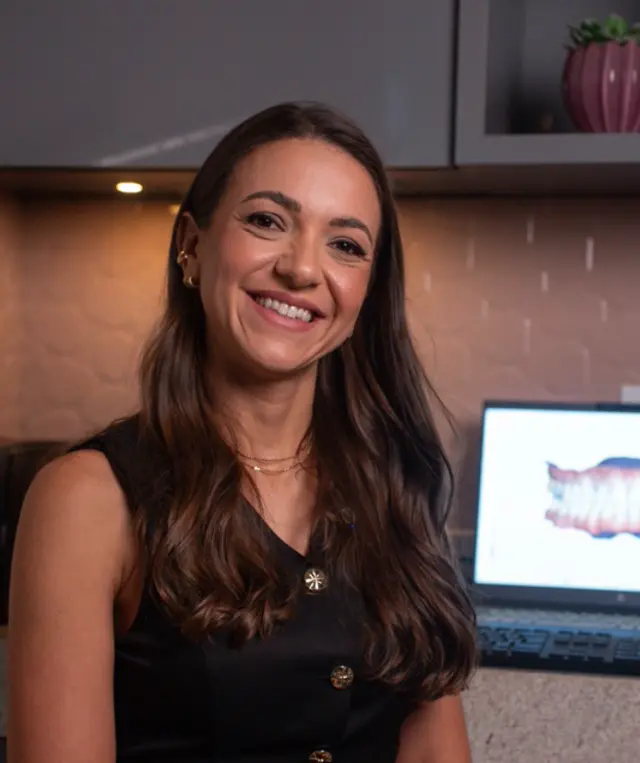

A chegada
Você é recebido por quem organiza sua chegada.

Instituto Odontológico Fontanari · Rio Preto
Consulta e planejamento
Um diagnóstico cuidadoso e um planejamento individualizado.
Prevenção
Prevenção também é olhar para a função.
Aqui, cada dia começa com um sorriso na porta, com um “bom dia” que abraça, um olhar que acolhe e mãos que cuidam.
— Instituto Fontanari, na abertura de 2026 · ver o post
O caminho do cuidado
Você é recebido por quem organiza sua chegada.
Por quem prepara cada material com carinho e responsabilidade, por quem esteriliza, separa, protege.
O cuidado continua. Não é só técnica — é escuta, é presença, é zelo.
Quando você vai embora, o cuidado não termina: segue com você, nas orientações e no acompanhamento.
Frases do post de abertura de 2026 do @institutofontanari.
“É por isso que valorizamos tanto a consulta e o planejamento.”
ver o post
Prevenção e diagnóstico
Alterações no fluxo salivar podem estar ligadas ao estresse, a alterações hormonais, a medicamentos e ao estilo de vida. Com testes simples, o instituto avalia fluxo e pH da saliva para um planejamento mais preventivo, personalizado e seguro.
Ver o vídeo no InstagramDesgastes, sensibilidade e retrações gengivais podem ser sinais de um desequilíbrio que passa despercebido. A análise oclusal identifica sobrecargas antes que elas causem problemas maiores.
Ver o vídeo no InstagramAs bactérias cromogênicas causam manchas nos dentes e se aderem ao esmalte. Precisam de avaliação e profilaxia profissional para remoção e controle.
Ver o vídeo no InstagramCom o tempo pode ocorrer soltura, deformação do fio e inflamação gengival. Por isso, higiene adequada e consultas periódicas são essenciais.
Ver o vídeo no InstagramA Ortodontia infantil não trata apenas sorrisos: aproveita a fase de crescimento. Quando indicada no momento certo, a expansão rápida da maxila favorece o espaço para os dentes, a respiração e o desenvolvimento facial.
Ver o vídeo no InstagramO instituto
No Google
5,0de 5
75 avaliações públicas do Instituto Odontológico Fontanari.
Conferido em 30/09/2026.
Ver no Google MapsIsolamento absoluto
90%
Cerca de 90% das restaurações do instituto são feitas com isolamento absoluto — mais segurança, controle de umidade e qualidade no tratamento.
Ver o postQuem cuida

Periodontia · Reabilitação oral“Estudar, revisar a literatura, olhar criticamente para cada produto e compartilhar aquilo que realmente fizer sentido à luz da ciência e da prática clínica.”

Prevenção · Papo na cadeira“Aqui, a prioridade sempre foi prevenção e acompanhamento periódico.”
Papo na cadeira
A sensação de “dente mais limpo” vem da maior abrasividade, que remove manchas superficiais. O uso frequente pode desgastar restaurações estéticas, aumentar a sensibilidade, manchar resinas e, no caso do carvão ativado, até alterar a aparência da gengiva. Todo creme dental tem abrasivo, mas a escolha precisa ser individualizada. Fonte
Não. Ela é grande aliada na remoção da placa, principalmente para quem tem dificuldade com a escovação manual, mas o segredo está em usar da forma correta. Tipo de movimento (sônica ou rotatória), cerdas, potência e tamanho da cabeça mudam de um modelo para outro — por isso a indicação deve ser individualizada. Fonte
Podem ser bactérias cromogênicas. Elas causam manchas e nem sempre estão ligadas à má higiene; aderem-se ao esmalte e precisam de avaliação e profilaxia profissional para remoção e controle. Fonte
Sim. Com o tempo pode ocorrer soltura, deformação do fio e inflamação gengival. Higiene adequada e consultas periódicas são essenciais. Fonte
Porque o compromisso é oferecer um diagnóstico cuidadoso, um planejamento individualizado e a segurança para que você tome decisões com tranquilidade. Fonte
Siga no Instagram
@institutofontanariOs vídeos do Papo na cadeira, do Diagnóstico Salivar e da Análise oclusal estão no perfil do instituto.
Agende sua avaliação